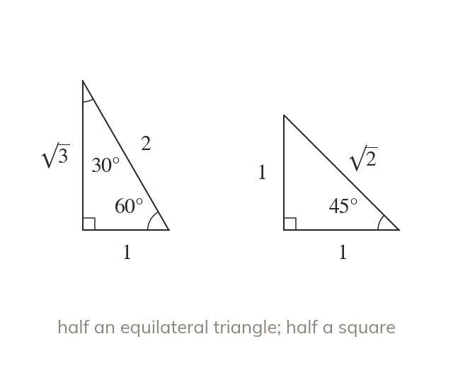
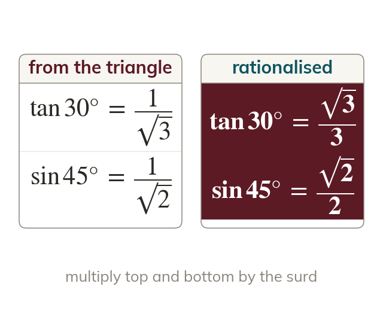
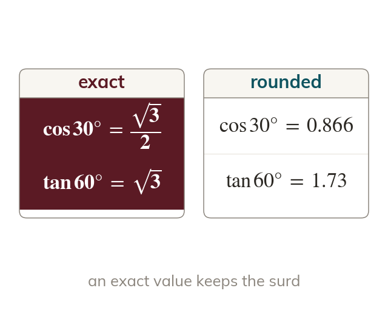
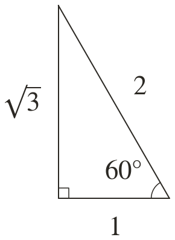
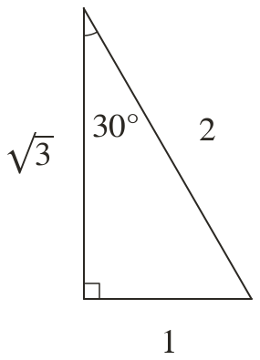
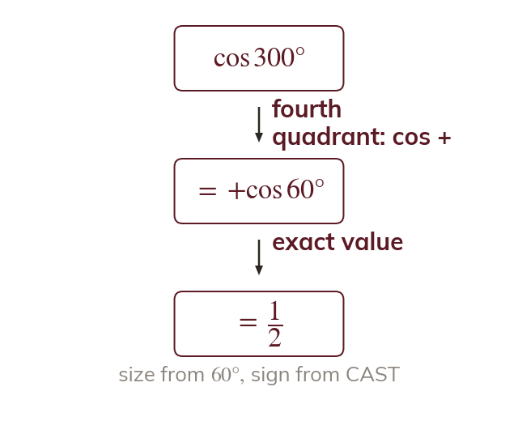
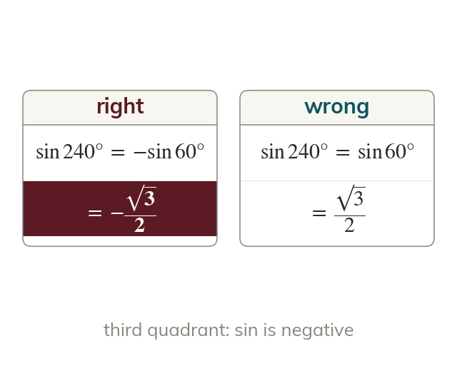

Two triangles hold the values
Half an equilateral triangle of side has sides and with angles and Half a square of side has sides and with two angles of
The ratios of and have exact values, read from two triangles, and A-level questions ask for them exactly, not as a calculator's decimals. With last lesson's CAST they give exact values for angles such as and which the equations of this chapter need.
Work down the page at your own pace. Write every answer in your book first, then click to check it.
Read each card, then follow the worked examples one step at a time.

Half an equilateral triangle of side has sides and with angles and Half a square of side has sides and with two angles of

Every ratio of or divides one side of a triangle by another, so its value is exact. A surd in a denominator is rationalised.

An exact value keeps or and never becomes a decimal. A question that says exact wants the surd form.


Pick an answer. If it's wrong, the feedback tells you which mistake it was.
Read each card, then follow the worked examples one step at a time.

An angle whose related acute angle is or has an exact value too. Its size comes from the acute angle and its sign from CAST.

The exact value of the acute angle is always positive. A minus sign appears only when CAST says the ratio is negative in that quadrant.
Pick an answer. If it's wrong, the feedback tells you which mistake it was.
Finished? Next lesson: 10.3 Trigonometric Identities.
For each skill, tap the one that is true for you today. Your Revise pages start with anything you mark Not yet.
Your ratings are saved on this device only.
Log in, then search for a code to practise that skill.